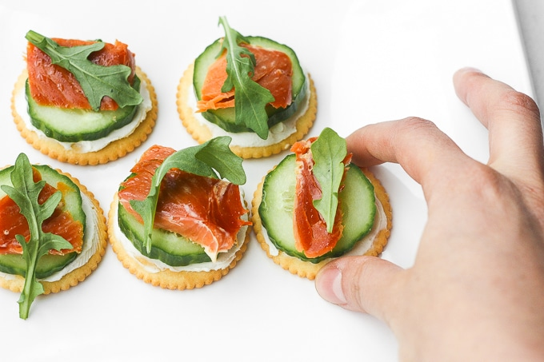

Smoked Salmon and Cream Cheese Crackers

Why it's so good!
Low in calories and high in protein, these crackers can serve as a small snack or a quick lunch. The smokiness of the salmon goes beautifully with the rich cream cheese and the cool, bright cucumber. A classic combination that needs no refinement.
Ingredients
- Dry crackers
- Smoked salmon
- Cream cheese
- Cucumber
Steps
- Take the smoked salmon out of the fridge and leave to rest for ten minutes.
- Spread the cream cheese on the crackers.
- Slice cucumber thinly and place on or two slices - depending on the size of the crackers you're using - on each cracker.
- Top with smoked salmon.
- Garnish with freshly ground black pepper.